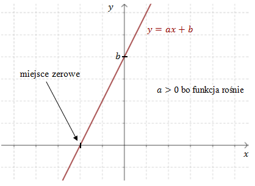

Funkcję liniową określa wzór \[f(x)=ax+b\]
gdzie:
\(a\) - to współczynnik kierunkowy
prostej
\(b\) - to wyraz wolny
Wzór funkcji liniowej często równoważnie zapisuje się w ten sposób: \[y=ax+b\]
Wykresem funkcji liniowej jest linia prosta.

Funkcja liniowa jest rosnąca jeżeli \(a\gt 0\).
Funkcja liniowa jest
malejąca jeżeli \(a\lt 0\).
Funkcja liniowa jest stała jeżeli \(a = 0\).
Metodę rysowania funkcji liniowej dokładnie omówię w następnym rozdziale.
Miejsce zerowe funkcji liniowej można obliczyć ze wzoru: \[x_0=-\frac{b}{a}\]